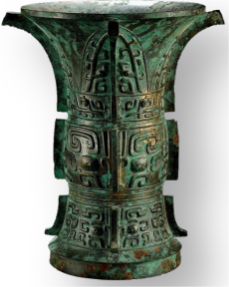
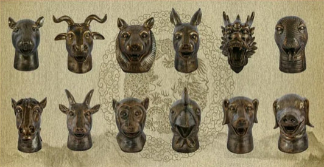
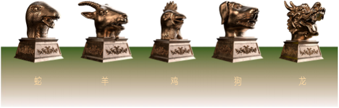
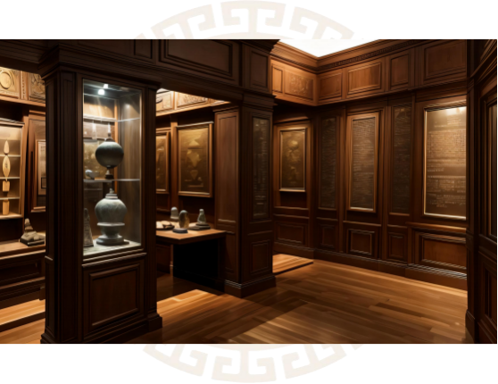

ToTem
Harness Totem Power
Trace Bronze Heads
Revive Chinese Glory
Introduction
Chinese culture is vast and profound, with a rich history spanning thousands of years. However, in modern times, numerous precious cultural relics have been lost overseas due to various historical reasons, becoming a source of pain for the Chinese people. The bronze animal heads, as significant representatives of these relics, symbolize the splendor and glory of Chinese culture. Five of these bronze heads are still scattered abroad, awaiting their return to their homeland to fulfill the long-cherished dream of coming home.
The Totem (ToTem) Community has emerged as a global non-profit organization initiated and supported by Chinese people worldwide. Our mission is to contribute to the revival and development of Chinese civilization by preserving, inheriting, and promoting Chinese culture. The establishment of the Totem Community signifies the start of an unprecedented philanthropic initiative: leveraging cutting-edge Web3 blockchain technology to trace and reclaim the bronze animal heads that remain lost overseas, and bring them back to their rightful home.
Background
1、The Importance and Global Impact of Chinese Cultural Relics
Chinese cultural relics hold a significant place not only in China but also as treasures of the world's cultural heritage. They showcase China's contributions in areas such as art, craftsmanship, technology, and social organization, having a profound and far-reaching impact on the development of world civilization.

Through the dissemination and exchange of these relics, many Chinese techniques, ideas, and art forms have influenced and inspired cultural development worldwide.
2、The Current Situation and Challenges of Chinese Cultural Relics Lost Overseas
Since ancient times, Chinese cultural relics have been admired as treasures of world heritage. Unfortunately, due to historical upheavals, wars, and illegal transactions, a significant number of precious artifacts have been lost overseas. These relics are scattered across museums, private collections, and auction markets around the world, forming a vast and complex network of Chinese cultural artifacts abroad. It is roughly estimated that the number of Chinese cultural relics lost overseas exceeds one million pieces.
These cultural relics, long adrift overseas, face the dual risks of natural and human-induced damage. During transportation, display, and preservation, some artifacts have unfortunately been damaged and even face the possibility of total loss. This is not only a significant loss for Chinese culture but also an irreparable harm to the cultural heritage of humanity.
However, the cross-border retrieval of cultural relics lost overseas is a daunting and complex task. The vast differences in legal systems and judicial practices between countries add to the difficulty of reclaiming these artifacts. In practice, it is also necessary to coordinate multiple interests, and the high economic value of these relics further complicates the process of their return.
Although China has joined international conventions such as the 1970 UNESCO Convention, issues regarding the retroactive effect and binding force of these conventions remain unresolved, and there are many challenges in their practical application.
3、The Application of Blockchain Technology in Cultural Relic Preservation
With the rapid development of blockchain technology, the field of cultural relic preservation has ushered in new changes. Blockchain technology, with its decentralized, immutable, transparent, and traceable characteristics, offers new solutions for the protection of cultural relics, greatly enhancing the efficiency and credibility of preservation efforts.
The decentralized nature of blockchain makes it possible to build a global network for cultural heritage preservation.
This network can gather global cultural institutions, experts, collectors, and enthusiasts to collectively participate in the preservation, tracking, and restoration of cultural artifacts. Through a decentralized network, information on cultural heritage preservation can be disseminated and shared more widely, thereby enhancing efficiency and collaboration in protection efforts.
Blockchain technology can also use token incentive mechanisms to encourage more people to participate in cultural heritage preservation efforts. For instance, in a tokenized community like Totem, participants can earn TTGS tokens as community rewards by contributing clues, providing expertise, and engaging in restoration activities. This incentive mechanism not only boosts public participation but also provides sustained motivation and resources for cultural heritage preservation.
In the context of globalization, the application of blockchain technology will inject new vitality into cultural heritage preservation efforts, promoting the sustainable development of cultural heritage and facilitating cross-border cooperation.
Project Overvie
1、Community background
The rich history of Chinese culture, spanning thousands of years, has nurtured countless precious cultural heritages.
Bronze Animal Heads, As an outstanding representative of this brilliant civilization, Chinese cultural heritages not only reflect the remarkable craftsmanship and artistic achievements of ancient China but also embody the spirit of the nation.
The birth of the Totem (ToTem) community stems from a shared vision: harnessing the power of modern technology to bring back lost Chinese cultural treasures from overseas and restore their former glory.
With the rapid development of blockchain technology, we see its immense potential in driving global collaboration, enhancing information transparency, and establishing trust. The Totem (ToTem) community has emerged with a commitment to using technological innovation and global cooperation to embark on a magnificent journey of safeguarding and passing down Chinese culture.

2、Community profile
The Totem (ToTem) community is a global non-profit organization initiated and participated in by the global Chinese community. It is dedicated to the protection, inheritance, and promotion of Chinese culture. Our goal is to use blockchain technology and global collaboration to locate and retrieve lost Chinese cultural treasures that are currently overseas.

With the support of Web3 blockchain technology, we have launched an unprecedented charitable initiative.
——Retrieve the five lost overseas bronze animal heads.
Let them return to their homeland, where fallen leaves return to their roots.
3、Community goal
· Protect Chinese culture:
Using blockchain and Web3 technology, harnessing global efforts to locate and retrieve the lost overseas bronze animal heads, bringing them back to their homeland.
· Inherit Chinese culture:
Through publicity and education, raising public awareness of the importance of Chinese cultural heritage, and inspiring collective participation in cultural preservation efforts.
· Promote Chinese culture:
Through various activities and projects, showcasing the charm of Chinese culture to the world, and enhancing international understanding and recognition of Chinese culture.
· Promote global collaboration:
Using blockchain technology to build a transparent and efficient global collaboration network, contributing wisdom and resources to the protection and inheritance of cultural heritage.
· Digital public welfare innovation:
By utilizing the TTGS token incentive mechanism, we aim to drive the development of digital philanthropy, attract more volunteers to participate in cultural treasure hunting initiatives, and establish a virtuous cycle of engagement.
· Model of global collaboration:
Through an efficient and transparent cooperation mechanism, we bring together the strengths of various sectors, providing a model for future philanthropic projects.
Token Economics
The Totem community issues and manages TTGS tokens to incentivize global volunteers and community members to participate in the protection and inheritance of cultural heritage. This innovative digital philanthropy model not only advances the search and return of the bronze animal heads but also provides a replicable example for future philanthropic projects.
Token Name: TTGS
Chinese: 图腾
Token Number: 120 billion
1、distribution mechanism
· Initial bottom pool construction：40%
Building an initial liquidity pool to support the circulation and trading of TTGS tokens on exchanges ensures the stability and liquidity of the token market.
· Public contribution：30%(locked position)
Supporting philanthropic projects and activities related to cultural preservation ensures long-term funding and the sustainable development of these initiatives.
· Community incentive：15%(Lock-in linear release)
Incentivizing community members and volunteers to actively participate in project tasks, including the search for bronze animal heads, information sharing, and technical support.
· Core community member：10%(Lock-in linear release)
Rewarding core members who make significant contributions to the project, including project initiators, technical developers, and the management team.
· Marketing：3%
Allocating funds for marketing and promotional activities to increase the visibility of TTGS tokens and the Totem community, attracting more participants and supporters.
· Drop address：2%
Distributing TTGS tokens through airdrops to early supporters and new users to expand the community and increase user engagement.
2、Token usage
TTGS tokens not only reflect their scarcity and broad application through limited supply and global collaboration but also demonstrate their immense potential and long-term value in the collector market through community consensus, market demand, crowdfunding, and revenue distribution. These factors collectively form the strong value foundation of TTGS tokens, attracting more collectors and investors to participate.
Limited Supply: The total issuance of TTGS tokens is 120 billion, with the finite supply increasing the tokens' scarcity and value.
Global Collaboration: Attracting cultural institutions, experts, collectors, and blockchain enthusiasts worldwide, enhancing the market demand and usage frequency of the tokens.
Community Consensus: Bringing together global collectors, cultural enthusiasts, and blockchain technology supporters to form a strong community consensus, providing a stable market foundation.
Market Demand: There is a strong demand in the market for cultural artifacts and art collections. TTGS tokens, as digital assets related to high-value cultural artifacts, possess enormous market potential.
Crowdfunding and Financing: Using TTGS tokens for crowdfunding and financing helps raise funds for cultural heritage preservation projects, thereby enhancing market demand and value recognition.
Revenue Distribution: Through incentive mechanisms, token holders can share in the economic returns generated by successful projects. The more successful the projects, the higher the token value.
Philanthropic Nature: Holding and using TTGS tokens supports cultural preservation projects, enhancing the token's value and social recognition in philanthropic donations.
3、value driving
TTGS tokens have a wide range of uses, including cultural artifact trading, NFT purchases, asset appreciation, governance rights, philanthropic donations, reward incentives, and cross-border payments, among others.
Through these uses, TTGS tokens play a crucial role not only in the fields of collection and trading but also have a positive impact on community governance and cultural preservation. They provide token holders with diverse value and utility scenarios.

Trade of cultural relics:
Used for payments in artifact transactions, TTGS tokens ensure transparency and security in the transaction process, reducing costs and risks.
NFT purchase:
Using TTGS tokens to purchase NFTs of cultural artifacts, such as bronze animal heads, provides a unique collecting experience.
Assets accretion:
The price of TTGS tokens is influenced by market supply and demand, offering holders opportunities for asset preservation and appreciation.
Governing power:
TTGS token holders can participate in community governance by voting and proposing initiatives, which fosters a greater sense of belonging and engagement.

charitable donations:
Using TTGS tokens for donations supports more cultural preservation projects, promoting the inheritance and celebration of Chinese culture.
Reward incentive:
Users who participate in community activities, provide artifact clues, or conduct research can earn TTGS token rewards, encouraging more people to engage in cultural heritage preservation.
Bronze Animal Head Recovery Plan
Global collaboration network construction
We actively recruit and select partners, including historians, archaeologists, art collectors, blockchain technology experts, and cultural heritage protection agencies from various countries, to join us in this great endeavor.
Historians and archaeologists
Organizing and researching existing clues to uncover the historical background and paths of loss of the bronze animal heads, providing scientific basis for their retrieval.
Art collectors and institutions
Using our network and professional knowledge to identify the current locations of cultural artifacts, facilitating dialogue and negotiation to increase the likelihood of their return.
Blockchain technology expert
Developing and maintaining a transparent, tamper-proof global collaboration network to facilitate worldwide sharing of cultural heritage information and cooperation.
Cultural heritage protection agency
Providing legal consultation, legal assistance, and judicial support for artifact retrieval to ensure the legality and effectiveness of cultural heritage recovery efforts.
2、Collection and analysis of bronze animal head information
The collection and analysis of information about the bronze animal heads form the foundation of the entire search plan.
- Existing Clue Review: Utilizing big data and artificial intelligence technology to deeply excavate and analyze massive amounts of information, aiming to uncover more potential leads and collectors.
- Contacting Potential Collectors: Through email, phone calls, meetings, etc., we engage in deep discussions with collectors to obtain more clues about the bronze animal heads.
- Artifact Identification and Evaluation: Inviting renowned domestic and international experts in artifact identification to authenticate artifacts, ensuring their authenticity and value, thereby providing strong support for the repatriation efforts.
3、Repatriation Action Strategy and Execution
In the process of repatriating the bronze animal heads, we will develop a detailed repatriation action strategy.
- Negotiation and Consultation:
Engaging in negotiations and consultations with potential collectors and institutions to secure the repurchase or donation of artifacts to the state in a reasonable manner and at a fair price.
- Artifact Security:
Collaborating with professional transport companies and security agencies to develop a transportation and security plan for the artifacts, ensuring they are properly protected.
- Repatriation Ceremony and Publicity:
Hosting a grand repatriation ceremony and conducting extensive public outreach activities to raise awareness and emphasize the importance of cultural heritage preservation.

Innovation Plan
1、Building a Global Collaboration Network
Totem Community applies smart contract technology to artifact trading, ensuring transparency, security, and traceability in transactions.
Through smart contracts, we have automated the execution of artifact transactions, reducing human intervention and the risk of fraud. Additionally, smart contracts record the transfer history of artifacts, providing strong support for artifact tracking and repatriation.
Transaction transparency:
All transaction records are publicly visible and accessible to anyone, preventing behind-the-scenes operations.
Automated execution:
Smart contracts execute transactions automatically based on predefined conditions, eliminating the need for human intervention and reducing operational errors and delays.
Preventing fraud:
Due to the tamper-proof nature of smart contracts, neither party can maliciously alter the transaction terms, ensuring fairness in transactions.
Transaction history:
Smart contracts record every transfer and transaction of artifacts, providing a complete historical record and reliable data support for artifacts.
2、DeFi support
Totem Community utilizes decentralized finance (DeFi) technology to provide funding support for the search and repatriation project of the bronze animal head.
By issuing blockchain-based cryptocurrencies or tokens, we attract global investors to participate collectively and raise the necessary funds. This financing method is not only transparent and fair but also reduces financing costs and improves the efficiency of fund utilization.
cryptocurrency:
Issuing blockchain-based TTGS tokens to attract global investors for collective participation in raising the necessary funds for the plan.
Cost reduction:
Decentralized financing eliminates intermediaries in traditional financing, reducing costs and improving the efficiency of fund utilization.
global participation:
The decentralized nature of blockchain technology allows global investors to participate seamlessly, providing projects with a broader range of funding sources.
3、NFT applications
Totem Community utilizes NFT technology to create unique digital identities for artifacts such as the bronze animal head.
Through NFTs, we can permanently preserve and trade the digital forms of artifacts, ensuring their uniqueness and non-replicability. This not only provides more opportunities for display and transactions but also offers collectors more choices and convenience.
digital identity:
Each artifact obtains a unique digital identity through NFT technology, ensuring its uniqueness and non-replicability.
permanent preservation:
The digital forms of artifacts are permanently preserved using blockchain technology, immune to damage or loss due to time and environmental changes.
convenient transactions:
NFTs can be traded globally, allowing collectors to buy, sell, or exchange artifacts at any time, thereby increasing the circulation and market value of artifacts.
opportunities for display:
Through NFT platforms, artifacts can be digitally showcased to a global audience, increasing their visibility and cultural impact.
collecting experience:
Collectors can own digital ownership of artifacts through NFT technology, enjoying a unique collecting experience and gaining various rights associated with physical artifacts.
Through the innovative initiatives mentioned above, Totem Community leverages blockchain and Web3 technologies to bring new solutions to artifact preservation and trading, enhancing transparency, security, and efficiency. This not only promotes the inheritance and promotion of Chinese culture but also provides new opportunities and value for global collectors and investors.
Development Plan
Short-term goals
·Recruit and screen a batch of high-quality partners to establish an initial global collaboration network.
·Gather and analyze existing clues about the bronze animal head, preliminarily identifying potential collectors and institutions.
·Issue blockchain-based TTGS tokens to attract global investors for collective participation in raising the necessary funds for the plan.
Medium-term goals
·Successfully execute multiple repatriation actions of the bronze animal head, raising public awareness and importance of cultural heritage protection.
·Expand the global collaboration network to form closer partnerships.
·Further enhance the application of blockchain technology in artifact tracking to improve information security and privacy protection.
Long-term goals
·Establish a global platform for artifact preservation and repatriation, contributing to the conservation of cultural heritage worldwide.
·Continuously enhance community member engagement and participation to foster a strong community cohesion and influence.
·Drive technological innovation and expand applications to provide more possibilities for artifact preservation and repatriation efforts.
Risk Warning and Disclaimer
Please carefully read the following risk warning and disclaimer before participating in the Totem (ToTem) community and its related projects:
Participants should understand and accept the following content to accurately assess personal risk tolerance and make informed decisions.
1、Risk warning
1.
Market Risk: The blockchain and cryptocurrency markets are highly volatile and uncertain. Token prices may experience sudden increases or decreases, leading to investment losses.
2.
Technical Risk: Blockchain technology is still in its early stages of development, which may pose systemic risks and vulnerabilities such as smart contract code bugs, network attacks, etc., potentially resulting in asset losses.
3.
Regulatory Risk: Cryptocurrency and blockchain technology are subject to varying legal and regulatory environments in different countries and regions. Changes in relevant laws and policies may have a negative impact on the project and token value.
4.
Execution Risk: Despite our best efforts to ensure transparency and effectiveness of the project, we cannot guarantee that the project will achieve its expected goals or be executed according to plan.
5.
Liquidity Risk: TTGS tokens may face liquidity risks, potentially resulting in difficulties trading the tokens on certain exchanges or experiencing abnormal price fluctuations.
6.
Third-Party Service Risk: Totem Community may collaborate with third parties to provide certain services. However, we cannot fully control the security, reliability, and compliance of these third-party services. Users should assess the risks themselves and use them cautiously.
7.
Information Disclosure Risk: Despite our efforts to ensure accurate and timely information, we cannot guarantee the completeness, accuracy, and reliability of the information. Participants should make their own judgments and bear the associated risks.
2、Disclaimer
Investment Risk: Any investment behavior in the Totem Community and its related projects is voluntary, and participants must bear the risks and losses associated with their investments.
Legality Statement: The operation of this platform and the issuance of related tokens comply with applicable laws and regulatory requirements, but this does not constitute a commitment or guarantee of any law or regulation.
Technical Responsibility: Totem Community assumes no direct or indirect responsibility for any technical issues or data loss resulting from the use of the platform.
Third-Party Links: The platform may contain links to third-party websites or resources. Totem Community is not responsible for the accuracy, completeness, or reliability of the content of these links.
We strongly recommend that users fully understand the associated risks before participating in the Totem Community and make informed investment decisions based on their own risk tolerance. If you have any questions, please consult professional institutions or lawyers for evaluation and advice.
Please note that the above statements do not cover all potential risk factors. Users must independently assess and judge the risks of their trading activities. Totem Community reserves the right to update risk warnings and disclaimers as needed.
Please carefully read, understand, and agree to the above disclaimer before deciding whether to use the services of the Totem Community. If you do not agree with any part of it, we advise you not to use our services.